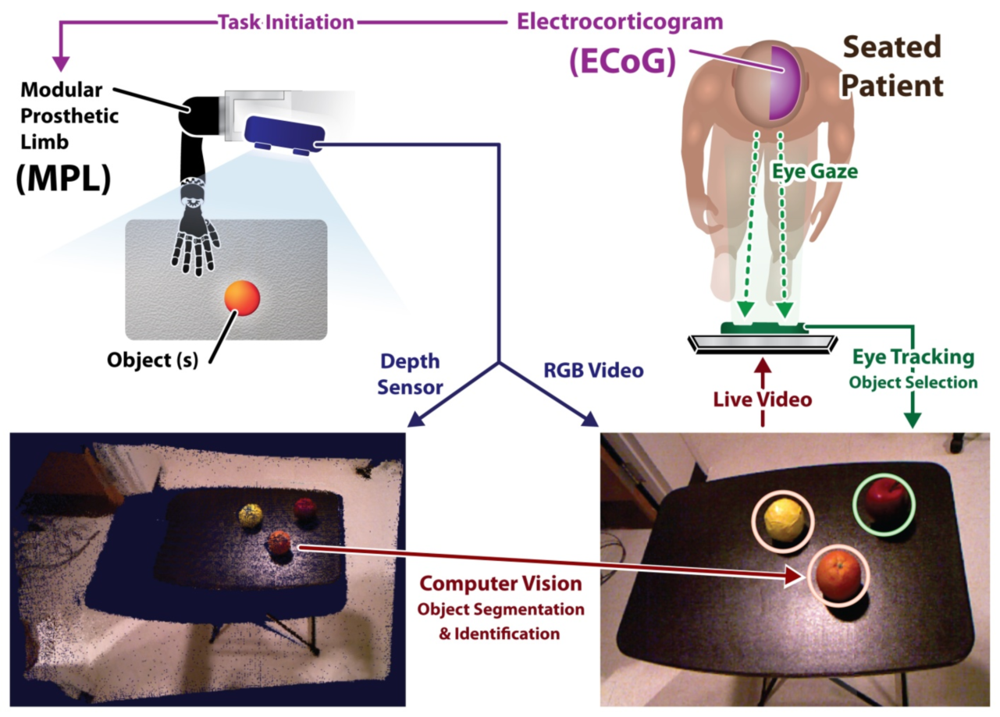

Brain-Machine Interfaces
Robotic prosthetics like the modular prosthetic limb (MPL) developed by the Johns Hopkins University Applied Physics Lab (JHU/APL) are now capable of extremely dexterous hand and arm movements. The growing capabilities of these prosthetics present a complementary problem of how to provide control to a paralyzed patient over every component of a robotic arm and hand. The field of brain-machine interface (BMI) has attempted to answer this challenge by using movement-related neural activity to control prosthetic limb joints or axes of limb movement. Our lab is interested in better understanding the representation of these movements in brain signals, and in developing easier ways for patients to control complex prosthetic arms.

We are investigating the use of sensors like the Microsoft Kinect interpreted by intelligent algorithms to help users control prosthetics more easily with their neural activity. Traditional approaches to BMI control of prosthetics seek to give users continuous fine-grained control over all of the joints in the arm and hand. Even if we can build an accurate model of how each joints' movements are represented in the brain, it nevertheless requires a large degree of concentration to control an arm in this way. In collaboration with JHU/APL, we have begun researching alternative prosthetic control strategies to address this problem. As an example, a recent study by our team demonstrated a "supervisory control" strategy. Using ECoG signals, patients initiated fully automated reaching and grasping movements which were carried out by an intelligent movement planning algorithm. Environmental sensors and computer vision supplied the scene and object information, while eye-tracking and neural decoding models were used to select one of several objects to manipulate and start the manipulation.
There are many ways to measure a patient's neural activity, including scalp electrodes (EEG), functional magnetic resonance imaging (fMRI), and multielectrode arrays capable of recording the firing of single neurons. Each of these technologies is fairly mature and offers tradeoffs in how much brain it can record from at once (i.e., the "extent of coverage") and in how precisely activity can be localized in space and time. Our lab is interested in interested in characterizing patterns of neural activity at an intermediate scale using an emerging (relatively speaking) recording technology known as electrocorticography (ECoG). ECoG electrodes sit directly on the surface of the cortex and are thought to record from populations of neurons. There is still a lot to learn about how full movements like reaching out to grab an apple are encoded at this population scale. Our team recently investigated how reaching and grasping were represented in neural activity when both were performed simultaneously. The models trained in the study were then used by two subjects to control reaching and grasping of the Modular Prosthetic Limb simultaneously.